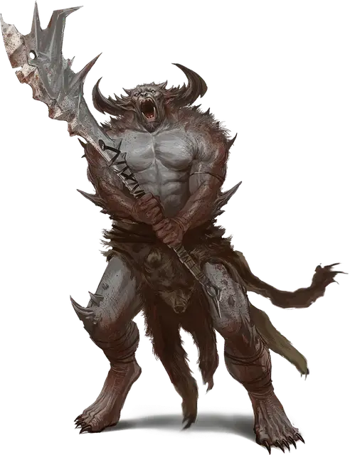

Танарукк
Tanarukk
Среднее Исчадие (Демон, Орк), хаотично-злое

Класс Доспеха 14 (природный доспех)
Хиты 95 (10к8 + 50)
Скорость 30 футов
| мод | спас | ||
|---|---|---|---|
| СИЛ | 18 | +4 | +4 |
| ЛОВ | 13 | +1 | +1 |
| ТЕЛ | 20 | +5 | +5 |
| мод | спас | ||
|---|---|---|---|
| ИНТ | 9 | −1 | −1 |
| МДР | 9 | −1 | −1 |
| ХАР | 9 | −1 | −1 |
Навыки Восприятие +2, Запугивание +2
Сопротивление урону огонь, яд
Чувства тёмное зрение 60 футов, пассивное Восприятие 12
Языки Общий, Бездны, Орочий
Опасность 5 (1800 опыта)
Бонус мастерства +3
Среда обитания Горы, Подземье, Холмы
Особенности
Агрессия. Бонусным действием орк может переместиться на расстояние не больше своей скорости к враждебному существу, которое может видеть.
Сопротивление магии. Танарукк имеет преимущество на спасброски против заклинаний и других магических эффектов.
Действия
Мультиатака. Танарукк совершает две атаки: одну укусом и одну двуручным мечом.
Укус. . Рукопашная атака оружием: +7 к попаданию, досягаемость 5 футов, одна цель. Попадание: 8 (1к8+4) колющего урона.
Двуручный меч. . Рукопашная атака оружием: +7 к попаданию, досягаемость 5 футов, одна цель. Попадание: 11 (2к6+4) рубящего урона.
Реакции
Необузданная ярость. В ответ на попавшую по нему рукопашную атаку, танарукк может совершить одну рукопашную атаку оружием с преимуществом по атакующему.
Описание
Когда демоническое разложение пятнает лидеров племени, орки могут обратиться к магии Бездны для того, чтобы создать танарукков. Злые люди, которые контролируют орков тоже используют такую силу, чтобы увеличить мощь своих последователей.
Повелитель Демонов Бафомет радостно делится секретом создания танарукков с теми, кто умоляет его о силе. Процесс извращает нерожденного ребенка племени, превращая его при рождении в гораздо более дикое, чем орк, существо.
Хоть танарукки и внушающие ужас бойцы, они являются угрозой союзникам вне поля боя. В логове племени танарукк разрушителен и взрывоопасен, и лучше держать его взаперти. Рано или поздно танарукк пронесется по племени и попытается завладеть им силой. Большинство таких переворотов проваливается, но с большими потерями для племени. Если танарукк получает лидерство над племенем, то он неизбежно возьмет курс на безумную войну.
Если танарукк сможет заделать потомство, то его кровь запятнает бесчисленное количество последующих поколений, так что его отдаленные потомки–женщины могут случайно родить танарукка. Большинство племен предпочитает убить эту мерзость, а не воспитывать танарукка, рожденного естественным путем.